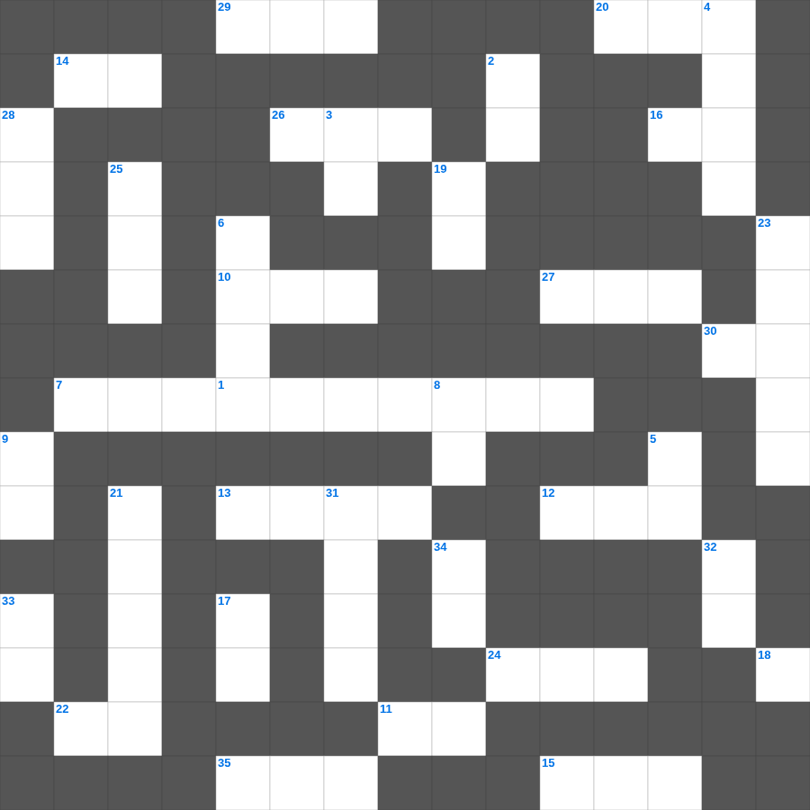

마지막 때의 징조
📌 서비스 정의
십자가로세로는 교회 주보와 주일학교에서 사용할 수 있는 성경 기반 가로세로 퍼즐 서비스입니다. 성경 인물, 사건, 핵심 구절을 바탕으로 제작되었습니다. 온라인 풀이 및 인쇄 기능을 제공합니다.
📖 이 글은 어떤 내용인가요?
성경은 마지막 때에 일어날 일들에 대해 여러 징조를 언급합니다. 거짓 선지자의 출현, 전쟁과 재난, 복음의 확산, 그리고 그리스도의 재림 등은 신약 곳곳에서 경고와 소망의 메시지로 함께 제시됩니다. 이 퍼즐은 마지막 때에 관한 성경의 가르침을 정리하며, 깨어 있는 신앙의 자세를 돌아보게 합니다.
📚 핵심 포인트
거짓 선지자와 거짓 그리스도 · 전쟁과 재난의 징조 · 복음의 세계적 확산 · 그리스도의 재림 · 깨어 있으라는 권면
오늘은 마지막의 주요 내용을 담은 마지막 성경퀴즈를 준비했습니다. 총 35개의 힌트가 있으며, 주일학교 교재나 성경공부 자료로 활용하기 좋습니다. 무료로 즐기는 마지막 가로세로 퍼즐을 지금 바로 풀어보세요!

📝 가로 힌트
1. 계시록의 일곱 교회 중 차지도 뜨겁지도 않은 교회
7. 성경 인물 중 가장 장수한 사람은?
10. 이스라엘이 광야에서 보낸 년수
11. 단련하신 후에는 내가 이것 같이 나오리라
12. 하나님께 노래로 영광 돌리는 팀
13. 솔로몬의 일천 번제
14. 마음이 이것한 자는 하나님을 볼 것임
15. 한 해의 첫 열매를 드리는 절기
16. 광야에서 하늘에서 내려온 양식
20. 보라 세상 죄를 지고 가는 하나님의 이것
22. 나답과 아비후가 다른 불을 드리다 죽은 일
24. 노아의 방주에 비가 내린 일수
26. 아론과 훌이 모세의 팔을 붙든 곳
27. 안드레의 형제
29. 예수님이 자라나신 동네
30. 요나가 다시스로 가기 위해 배를 탄 항구
35. 모세가 십계명을 받은 산
📝 세로 힌트
2. 부활하신 날은 안식 후 이것
3. 호흡이 있는 자마다 찬양하라 이것으로
4. 양의 뿔로 만든 나팔
5. 성소 안에 있는 일곱 줄기의 등불
6. 범사에 이것하라
8. 성경의 맨 마지막 단어
9. 너는 내게 부르짖으라 내가 네게 이것하겠고
17. 성막 내부를 덮는 휘장의 색깔(청색, 자색, 이것)
18. 공중에 나는 이것(다섯째 날)
19. 야곱의 아들 수
21. 성경의 마지막 심판
23. 남은 조각을 거둔 바구니의 수
25. 광야 생활을 기억하며 텐트를 치는 절기
28. 베드로가 하루에 전도하여 세례받은 사람 수
31. 눈물의 선지자로 불리는 사람
32. 죽음에서 다시 살아나심
33. 너희 죄를 서로 이것하며 병이 낫기를 위하여 서로 기도하라
34. 엘리야가 회오리바람을 타고 간 곳
📖 함께 읽으면 좋은 성경사전
퍼즐을 풀기 전에 읽으면 힌트가 쉬워지고, 풀고 나서 읽으면 내용을 한 번 더 복습할 수 있습니다.
🧩 이 퍼즐에서 배우는 내용
이 퍼즐은 마지막 때의 징조의 핵심 단어와 개념을 자연스럽게 복습할 수 있도록 구성되었습니다. 주일학교 수업이나 개인 성경공부에서 학습 내용을 점검하는 용도로 바로 활용할 수 있습니다.
🧑🏫 교회 교육 자료 활용
이 퍼즐은 주일학교 교재 추천 자료로 활용할 수 있고, 주일학교 주보에 넣기 좋은 분량으로 구성되어 있습니다. 수업용 주일학교 교안에 활동지로 붙이거나, 예배 후 복습용 주일학교 공과교재로 바로 사용할 수 있습니다.
🏷️ 키워드
마지막 성경퀴즈, 마지막, 십자가로세로, 성경퀴즈, 말씀퀴즈, 가로세로퍼즐, 주일학교 교재 추천, 주일학교 주보, 주일학교 교안, 주일학교 공과교재